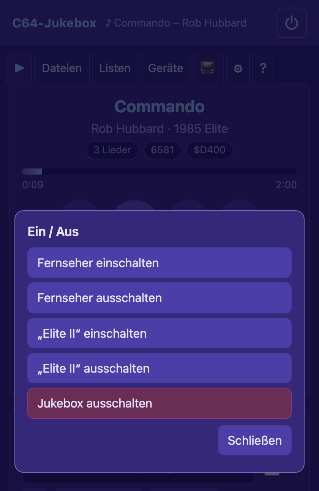
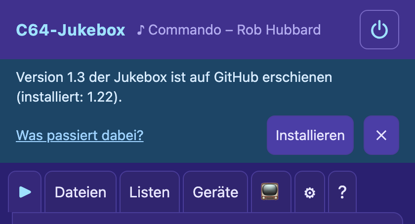
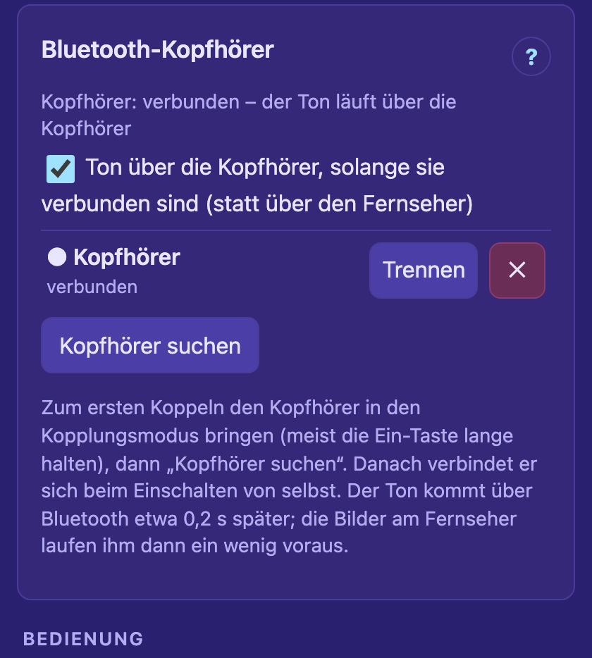
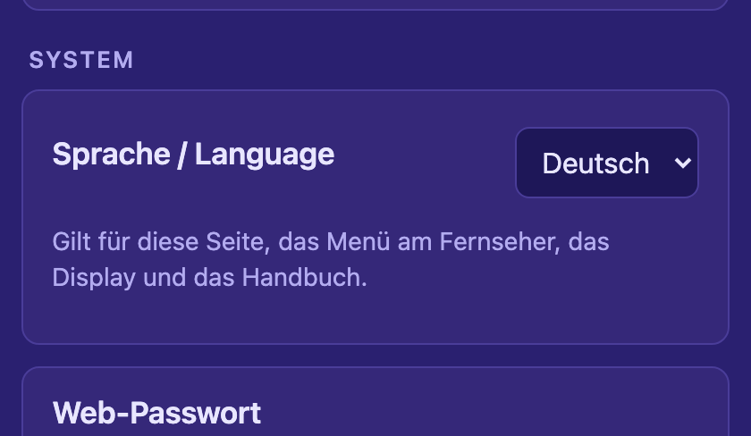
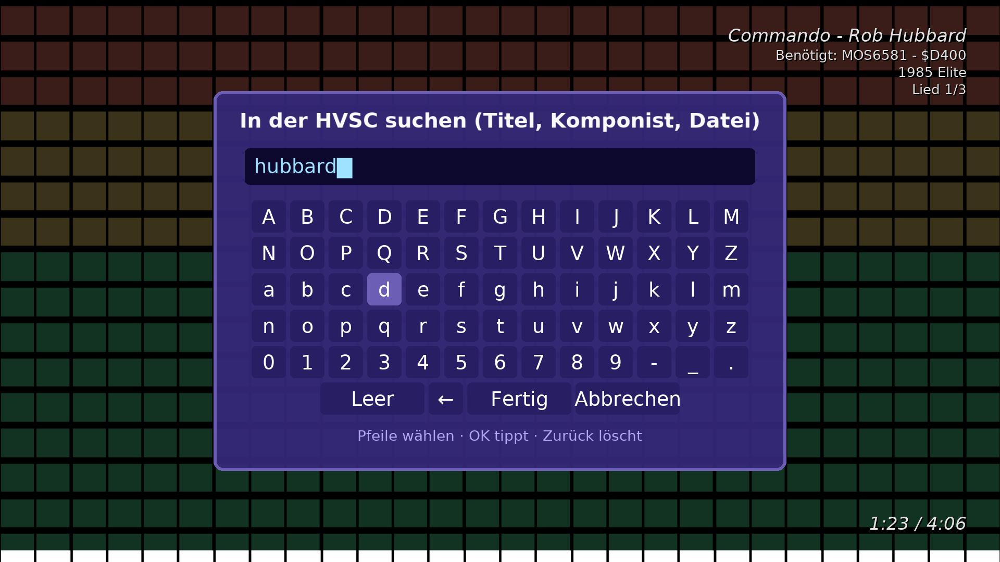
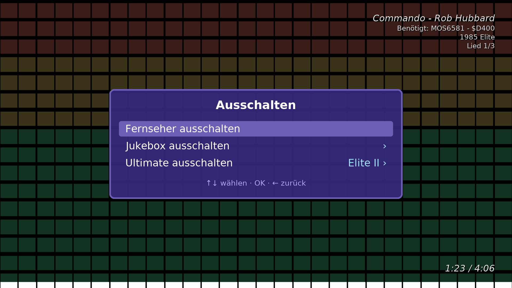
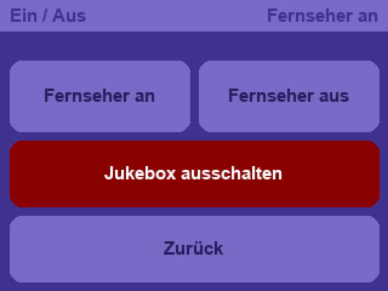
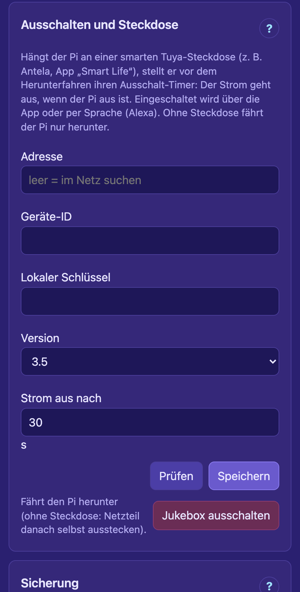

Diese Anleitung zeigt die Bedienung (Stand: Version 1.22). Installation,
Hardware und alle Einzelheiten stehen im Handbuch der Jukebox – in der Weboberfläche im Tab Hilfe (jeder runde
?-Knopf springt an die passende Stelle) und als docs/HANDBUCH.md. Die Bilder zeigen Beispieldaten.
1 · Drei Wege zur Bedienung
Womit
Was geht
Voraussetzung
Weboberfläche Handy, Tablet, PC
Alles: Musik auswählen und abspielen, Listen, Einstellungen, Fernseher, Ultimates, Picos, Ein/Aus.
Browser im selben Netz, Adresse http://c64pi.local/
Fernbedienung des Fernsehers
Abspielen, Stopp, Titel und Unterlied wechseln, Effekt wechseln – und über das Menü am Fernseher
Musik wählen und in der HVSC suchen, Zufall, Bild und Ton, Ultimate, Update, Sprache, Ausschalten.
Pi am HDMI-Eingang, HDMI-CEC am Fernseher eingeschaltet
Touch-Display am Pi 2,8″, optional
Anzeige von Titel, Pegel und Netz; Tasten ⏮ ■ ⏭ und ⏻ (Fernseher an/aus, Jukebox ausschalten).
Display angeschlossen
So kommt man auf die Weboberfläche:
Im Browser http://c64pi.local/ öffnen. Geht der Name nicht (bei manchen Android-Handys), die
IP-Adresse des Pi nehmen – sie steht am Fernseher neben dem QR-Code (einfach mit der Handy-Kamera
scannen) und auf dem Display am Pi.
Mit dem Web-Passwort anmelden (ab Werk commodore64 – ein gelber Balken erinnert daran, es unter
Einstellungen → Web-Passwort zu ändern).
Als App aufs Handy: am iPhone in Safari Teilen → Zum Home-Bildschirm, am Android-Handy in Chrome
⋮ → Zum Startbildschirm hinzufügen. Die Jukebox bekommt ein eigenes Symbol (die Note) und öffnet sich ohne
Adressleiste wie eine App – ganz ohne App Store.
Die Jukebox spielt selbstständig weiter, auch wenn keine Seite offen ist. Alle offenen Seiten zeigen denselben
Stand – man kann am Handy starten und am PC weitermachen.
Deutsch oder Englisch: Beim ersten Aufruf nimmt die Jukebox die Sprache des Browsers. Umstellen geht unter
Einstellungen → System → Sprache / Language oder im Menü am Fernseher unter Sprache / Language; die
Sprache gilt für die Seite, das Menü am Fernseher, die Displays und das Handbuch.
2 · Die Weboberfläche

Der Knopf ⏻ oben rechts öffnet „Ein /
Aus“ – von jedem Tab aus
Ganz oben steht immer der laufende Titel, rechts daneben der Knopf ⏻:
Fernseher einschalten / ausschalten (über HDMI-CEC), das gewählte Ultimate ein- und
ausschalten und Jukebox ausschalten (siehe Abschnitt 12). Darunter die Tabs – am Handy zum Teil als
Zeichen:
Quellen (NAS, FTP, USB-Sticks), Ordner, Filter, Suche (auch in der ganzen HVSC)
Listen
Listen
gespeicherte Listen, Zusammenstellungen, „Zuletzt gespielt“, Statistik, gesperrte Titel
Geräte
Geräte
Ultimates (welches spielt, ein/aus), Picos und Stream-Verteiler, Geräte im Netz
Anzeige
📺
Bild am Fernseher · Ton (auch Bluetooth-Kopfhörer) · Bedienung
(TV-Fernbedienung, Display am Pi)
Einstellungen
⚙
Abspielen · Netzwerk des Pi · System (Sprache,
Passwort, Ausschalten, Sicherung, Updates)
Hilfe
?
das Handbuch

Neue Version auf GitHub: blauer Hinweis mit
Installieren (✕ blendet ihn für diese Version aus)
Updates: Einmal am Tag sieht die Jukebox auf GitHub nach einer neuen Version.
Installiert wird nur auf Befehl – mit Installieren im Hinweis, unter Einstellungen → System → Updates
oder im Menü am Fernseher (Nach Update sehen). Das dauert einige Minuten; Einstellungen, Listen und
Songlängen bleiben erhalten, bei einem Fehler kommt das alte Programm zurück.
Kurze Meldungen („Gespeichert“, „Commando – spielt“) erscheinen unten für ein paar Sekunden.
3 · Musik auswählen – Tab „Dateien“
Quellen oben, darunter der offene Ordner
mit Titel, Komponist, Jahr und Unterliedern
Quellen stehen oben als Kacheln: eine Netzwerkfreigabe (NAS, Windows, Mac), ein FTP-Server, der
USB-Stick am Ultimate oder ein USB-Stick am Pi. Antippen öffnet, ✎ bearbeitet, + Quelle richtet eine
neue ein (mit „Im Netz suchen“). Die Jukebox merkt sich je Quelle den zuletzt offenen Ordner.
Ordner antippen öffnet ihn; die Pfadzeile darüber führt mit einem Tipp zurück.
Eine SID antippen (oder ▶) spielt sie – und danach die übrigen Dateien des Ordners. Die bisherige
Liste wird dabei ersetzt.
+ hängt eine Datei hinten an die Liste an, ohne die Wiedergabe zu unterbrechen.
▶ Ordner abspielen nimmt alle SIDs des Ordners – mit mit Unterordnern auch aus allen
Unterordnern, mit Zufall gemischt. + Liste hängt sie stattdessen an.
Filterfeld: wirkt sofort auf den offenen Ordner (Dateiname, Titel, Komponist, Jahr; mehrere Wörter
müssen alle vorkommen, z. B. hubbard 1986).
🔍 Unterordner sucht das Wort in allen Unterordnern (bis 500 Treffer); „Ordner abspielen“ spielt
dann die Treffer, ✕ in der Pfadzeile führt zurück.
🔍 HVSC sucht sofort in der ganzen HVSC, ohne Ordner zu lesen (sobald die HVSC-Songlängen
geladen sind). Titel und Komponist aus den Dateien findet sie, nachdem einmal Einstellungen → Songlängen →
Titel für die Suche einlesen gelaufen ist.
Gelb 2 SIDs / 3 SIDs markiert Stereo-Stücke.
Songlängen und STIL: im HVSC-Ordner C64Music/DOCUMENTS bei Songlengths.md5
auf als HVSC-Längen laden tippen, bei STIL.txt auf als STIL laden. Dann wechselt die
Jukebox genau am Ende eines Titels und zeigt Hintergründe zu den Stücken.
4 · Wiedergabe und Liste – Tab ▶
Laufender Titel, Knöpfe und darunter die
Wiedergabeliste (am Handy)
Knopf
Wirkung
⏮
zum Anfang des Titels; in den ersten 5 s zum vorigen Titel
▶ / ❚❚
abspielen bzw. anhalten (das Ultimate wird pausiert) und fortsetzen
⏹
Stopp – das Ultimate wird zurückgesetzt
⏭
nächster Titel
‹ Lied 1 von 3 ›
anderes Unterlied des laufenden Titels
Zufall
mischt die Reihenfolge; seltener gespielte Titel kommen eher dran
Liste wiederholen
am Ende von vorn beginnen, sonst hält die Jukebox an
Ultimate
bei mehreren Ultimates: welches spielt
Fortschrittsbalken: mit bekannter Länge bis zum Ende, sonst bis zum Zeitlimit („max. 5:00“).
⚑ Ende hier merken erscheint, solange ein Titel ohne bekannte Länge läuft: am Ende des Stücks
drücken – die Spielzeit wird seine Länge, und künftig spielt er genau so lange.
⊘ Nicht mehr spielen springt zum nächsten Titel und setzt den laufenden auf die Sperrliste (siehe
Abschnitt 5).
Vorschläge: Findet die Jukebox selbst heraus, wann ein Stück von vorn anfängt („Fängt nach 1:35 von
vorn an“), oder dasselbe Stück in der HVSC, steht hier Übernehmen / Nein.
Unter dem Titel stehen die SID-Chips, die STIL-Hintergründe und ggf. eine SID-Umstellung („Sockel 2 für dieses
Stück auf $D420“).
Die Wiedergabeliste
Am PC zeigt die Liste alle Spalten: Dateiname, Titel, Komponist,
Stück, SIDs, Länge, wie oft gespielt, Favorit. Der laufende Titel ist gelb, ein grünes ▸ zeigt den nächsten.
Abspielen: doppelt antippen oder doppelklicken (am PC auch Enter).
Auswählen: antippen; am PC mit Strg/⌘ mehrere, mit Shift einen Bereich.
⋯ bei einem Titel (oder Rechtsklick): Abspielen, Als Nächstes, Stück wählen, Eigene Länge, Favorit,
Nicht mehr spielen, Im Tab Dateien zeigen, Aus der Liste nehmen.
Als Nächstes setzt die ausgewählten Titel direkt hinter den laufenden; Entfernen nimmt sie heraus.
★ antippen macht einen Titel zum Favoriten; der ★-Haken über der Liste zeigt nur Favoriten.
Sortieren: Tipp auf einen Spaltenkopf; am PC Zeilen mit der Maus verschieben.
Suchen: das Feld über der Liste durchsucht Dateiname, Titel und Komponist.
Längen in der Spalte: 3:05 aus der HVSC, 3:05* eigene, (5:00) grau =
unbekannt (es gilt das Zeitlimit). Längen prüfen sucht fehlende Längen in der HVSC.
Speichern … legt die Liste unter einem Namen ab (siehe Tab „Listen“).
Mehr ▾: Playlist der PC-Jukebox importieren/exportieren, Entdecken (ein selten gespielter Titel),
Stopp nach … (Titeln oder Minuten), Alles auswählen, Liste leeren.
Tasten am PC:Leertaste Abspielen/Pause, ←→ voriger/nächster Titel.
5 · Listen – Tab „Listen“
Gespeicherte Listen, Zusammenstellungen und
„Zuletzt gespielt“
Gespeicherte Wiedergabelisten
▶ Laden ersetzt die aktuelle Liste und spielt sie, + hängt sie hinten an, ↗ exportiert sie
für die PC-Jukebox, ✎ benennt um, 🗑 löscht. Gespeichert wird im Tab ▶ mit Speichern ….
Listen zusammenstellen
Ein Tipp spielt sofort: ★ Favoriten, Meistgespielt, Nie gespielt, Zufällige aus der
HVSC, Kurze Stücke, Stücke für 2 oder 3 SIDs. Unter Eigene Auswahl aus der HVSC lässt sich
nach Bereich (Musiker, Spiele, Demos), Komponist, Länge, Zahl der SIDs, STIL-Hintergrund und „nie gespielt“
auswählen. Dafür müssen die HVSC-Songlängen aus einer Quelle geladen sein.
Zuletzt gespielt
Die letzten 100 Titel mit Uhrzeit, neueste oben. ▶ spielt einen als nächsten, + hängt ihn an,
Als Wiedergabeliste übernehmen macht aus dem Verlauf eine neue Liste, Verlauf löschen leert ihn.
Statistik
Wie oft was gespielt wurde – die Zähler und Favoriten gelten je Datei, auch in anderen Listen.
Gesperrte Titel
Stücke, die man mit ⊘ Nicht mehr spielen gesperrt hat (Tab ▶, Menü ⋯ einer Zeile oder Menü am
Fernseher). Die Jukebox überspringt sie beim Weiterschalten, bei Zufall, „Entdecken“ und in den
Zusammenstellungen; in der Liste sind sie durchgestrichen. Von Hand gewählt spielen sie trotzdem.
Wieder spielen hebt die Sperre auf.
6 · Geräte – Tab „Geräte“
Karte „Ultimates“
Ultimates: Name und Ethernet-Adresse jedes Ultimate (Im Netz suchen findet sie), ggf. das
Netzwerk-Passwort. aktiv = dieses spielt. Speichern nicht vergessen.
⏻ Ein / Aus:Aus stoppt die Wiedergabe und schaltet das Ultimate aus, Ein weckt es über sein
WLAN (Ultimate 64-II). Die WLAN-MAC dafür merkt sich die Jukebox selbst. Dasselbe geht über den Knopf ⏻ oben
auf jeder Seite.
Picos und Stream-Verteiler: der Pi reicht den Ton des Ultimate an Visualizer und Audio-Empfänger weiter
und schickt ihnen Titel und Retro-News – Einrichtung siehe die Anleitung zum C64-Ökosystem.
Geräte im Netz: alle Picos und der Pi mit dem Weg des Tons; als Pico eintragen übernimmt ein
Gerät in die Liste des Verteilers.
7 · Anzeige: Fernseher und Display – Tab 📺
Der Tab hat drei Gruppen: Bild am Fernseher (HDMI, Hintergrund, Retro-News), Ton (Ton am Fernseher,
Bluetooth-Kopfhörer) und Bedienung (TV-Fernbedienung, Display am Pi).
Karte „Fernseher (HDMI)“
Bild am Fernseher
Bild am HDMI-Ausgang des Pi zeigen schaltet die Ausgabe ein. Jede Änderung gilt sofort – am Fernseher
sieht man gleich, wie ein Effekt wirkt.
Effekt: einer von 17 (wie in der PC-Jukebox) oder „Nur Hintergrund“.
Einblendungen: Titel, SID-Chips und Spielzeit; STIL-Hintergründe unten links; QR-Code, wenn nichts
läuft; die große „Jetzt läuft“-Karte bei jedem neuen Titel (Dauer einstellbar).
Effekte ausblenden, wenn keine Musik läuft (nach 20 s).
Effekt automatisch wechseln: Effekte ankreuzen und „während der Wiedergabe wechseln“ – alle 180 s ein
anderer.
Karte „Hintergrund am Fernseher“
Hintergrund: keiner, Bilder (Diashow: hochladen oder einen Ordner einer
Quelle wählen, z. B. vom NAS; Wechsel alle 20 s mit Überblenden) oder das Bild des C64 live vom Ultimate.
„Helligkeit des Hintergrunds“ dunkelt ihn ab.
Retro-News am Fernseher: Schlagzeilen aus Retro-Seiten (Indie Retro News, amiga-news.de, Commodore News
…) im Leerlauf als große Karte, als Laufband unten während der Musik. Jede Quelle einzeln an- und
abschaltbar, eigene Feeds mit + Quelle.
Karte „Ton am Fernseher“
Ton am Fernseher
Ton über HDMI zum Fernseher spielt den Ton des Ultimate über den Fernseher. Lautstärke (0–100 %)
macht ihn leiser, ohne die Fernbedienung zu suchen. Mit am Titelende aus-, beim nächsten einblenden
gehen die Titel sanft ineinander über (nur am Fernseher; das Ultimate selbst spielt unverändert). Hängt am
Ultimate auch eine Anlage, nur eines von beiden laut stellen – der Fernseher ist etwa 0,2 s später dran.
Bluetooth-Kopfhörer
Statt über den Fernseher kann der Ton auch über Bluetooth-Kopfhörer (oder einen Bluetooth-Lautsprecher) laufen:
Kopfhörer in den Kopplungsmodus bringen (meist die Ein-Taste einige Sekunden halten).
Kopfhörer suchen tippen, beim gefundenen Gerät Koppeln.
Danach geht der Ton an die Kopfhörer, sobald sie verbunden sind, und zurück an den Fernseher, wenn man sie
ausschaltet. Eingeschaltete Kopfhörer verbinden sich von selbst wieder.

Karte „Bluetooth-Kopfhörer“ mit gekoppelten,
verbundenen Kopfhörern
Der HDMI-Ausgang muss dafür eingeschaltet sein. Lautstärke und Ausblenden
gelten auch für die Kopfhörer; am Fernseher schaltet Bild und Ton → Ton über Kopfhörer um.
Bedienung
TV-Fernbedienung (HDMI-CEC): die Jukebox mit der Fernbedienung des Fernsehers bedienen – siehe Abschnitt
10. Dazu, wann der Fernseher an- und ausgeht: beim Start der Musik, wenn der Pi startet, nach einer Weile
ohne Musik – und ob die Jukebox ausgeht, wenn der Fernseher ausgeht (siehe Abschnitt 12).
Display am Pi: Art des Displays (kleines OLED oder 2,8″ mit Touch), Touch einrichten, Bild drehen, nach
wie vielen Minuten es dunkel wird – siehe Abschnitt 11.
8 · Einstellungen – Tab ⚙
Abspielen: Wiedergabe und
Zeitplan
Drei Gruppen: Abspielen (Wiedergabe, Zeitplan, Songlängen, Daten der PC-Jukebox), Netzwerk des Pi
(WLAN, Party-Modus) und System (Sprache, Web-Passwort, Ausschalten und Steckdose, Sicherung, Updates).
Abspielen
Einstellung
Wirkung
Nächster Titel ohne bekannte Länge nach … Minuten
Zeitlimit (Standard 5, 0 = nie)
oder nach … s Stille
springt weiter, wenn ein Titel endet und still wird (braucht den Stream)
Wiederholung erkennen
schlägt eine Länge vor, wenn ein Stück von vorn anfängt – vorschlagen,
automatisch oder aus
Gleiches Stück per Name in der HVSC suchen
Länge einer anderen Fassung derselben Musik übernehmen
Unterlieder
nur das Startlied oder alle nacheinander
SID-Adressen bei Bedarf umstellen
stellt für Stereo-Stücke einen freien SID-Sockel des Ultimate
passend um und danach zurück
Zeitplan: zu festen Zeiten eine Liste abspielen oder stoppen, z. B. werktags 18:00 „Feierabend“ – auf
Wunsch mit Fernseher ein/aus.
Songlängen: HVSC-Datei hochladen oder entfernen, eigene Längen herunterladen, Titel für die Suche
einlesen (für 🔍 HVSC); STIL entfernen.
Daten der PC-Jukebox übernehmen: Zähler, Favoriten und eigene Längen aus der PC-Jukebox.
WLAN und Netzwerk: WLAN wählen (für den Pi ohne Kabel), eigenes WLAN des Pi;
Party-Modus für unterwegs ohne Router.

Karte „Sprache / Language“
System
Sprache / Language: Deutsch oder Englisch – für Seite, Menü am Fernseher, Displays und Handbuch.
Web-Passwort ändern; Sicherung herunterladen und einspielen (alle Einstellungen, Quellen,
Listen, eigenen Längen und die Sperrliste in einer Datei).
Updates: einmal am Tag nachsehen (an/aus), Jetzt prüfen, Installieren.
9 · Am Fernseher
Am HDMI-Ausgang zeigt der Pi in 1920 × 1080 Effekte zur Musik – über schwarzem Grund, einer Diashow oder dem Live-Bild
des C64. Oben rechts stehen Titel, Komponist, die benötigten SID-Chips, Jahr und Unterlied, unten
rechts die Spielzeit. Bei jedem neuen Titel erscheint kurz die „Jetzt läuft“-Karte.
Effekt „Balken“ mit den Angaben oben rechtsEs läuft nichts: Hinweis mit QR-Code zur WeboberflächeRetro-News als Karte im LeerlaufRetro-News als Laufband während der Musik
Einige der 17 Effekte
SID-Stimmen: die echten Stimmen jedes SID als NotenrolleC64 RetroSchallplatteNeon-GitterMilkdropWolke
SID-Stimmen zeigt für jeden SID die drei Stimmen der letzten 5 Sekunden (Tonhöhe nach oben,
Stimme 1 rot, 2 grün, 3 blau, heller = lauter), rechts Note, Wellenform und Pegel. Dafür muss am Ultimate unter
Data Streams der „Debug Stream Mode“ einen 6510-Teil enthalten (Standard „6510 Only“), und er geht
nicht zusammen mit dem Hintergrund „Bild des C64“.
10 · Fernbedienung und Menü am Fernseher
Karte „TV-Fernbedienung (HDMI-CEC)“ – dort auch, wann der Fernseher an- und ausgeht
Einschalten: Tab 📺, Karte TV-Fernbedienung (HDMI-CEC), Haken bei „Jukebox mit der Fernbedienung des
Fernsehers bedienen“. Am Fernseher muss CEC an sein (bei den Herstellern z. B. Anynet+, SimpLink,
Bravia Sync, VIERA Link). Die meisten Fernseher schicken die Tasten nur an das Gerät, das sie gerade
zeigen – also auf den Eingang des Pi umschalten (oder in der Karte Fernseher jetzt auf den Pi umschalten).
Taste
Wirkung
▶❚❚
Stopp, wenn Musik läuft – Wiedergabe, wenn gestoppt
■
Stopp
⏭⏮ · ⏩⏪ ·
→←
nächster / voriger Titel
↑↓
nächster / voriger Effekt am Fernseher
Programm +−
nächstes / voriges Unterlied
OK oder eine Menü-Taste
öffnet das Menü am Fernseher
Im Menü:↑↓ wählen, OK oder
→ ausführen bzw. öffnen, Zurück oder ← eine Ebene
zurück (in der obersten: schließen). Nach 30 s ohne Taste schließt es von selbst. ▶, ■, ⏭ und ⏮ wirken auch bei
offenem Menü.
Das HauptmenüMusik wählen: HVSC-Suche, Quellen, Zusammenstellungen, ListenIn einer Quelle durch die Ordner blättern

In der HVSC suchen mit der Tastatur am Bildschirm: Pfeile
wählen, OK tippt, Zurück löscht, „Fertig“ suchtEffekt wählen (● = der laufende)

Ausschalten: Fernseher, Jukebox, Ultimate
Menüpunkt
Was er tut
Musik wählen ›
ganz oben In der HVSC suchen (Wörter eintippen, „Fertig“ zeigt bis 200 Treffer,
Alle … abspielen), dann die Quellen („Ordner: …“) zum Durchblättern – Diesen Ordner abspielen,
… mit allen Unterordnern, Ordner hinten anhängen, eine Datei spielt den Ordner ab ihr –, die
Zusammenstellungen und alle gespeicherten Listen (Abspielen, Hinten anhängen, Umbenennen, Löschen)
Ende hier merken / Erkannte Länge übernehmen / HVSC-Länge übernehmen
nur bei einem Titel ohne
bekannte Länge: die Spielzeit bzw. die gefundene Länge wird seine Länge
Titel nicht mehr spielen
fragt nach, setzt den Titel auf die Sperrliste, dann kommt der nächste
Zufall, Wiederholen
an/aus
Effekt ›
Effekt wählen (schaltet den automatischen Wechsel aus)
Bild und Ton ›
Effekte automatisch wechseln, Titel einblenden, Ton am Fernseher, Ton über Kopfhörer
(mit gekoppelten Kopfhörern), Lautstärke am Fernseher (jedes OK eine Stufe leiser: 100 → 90 … 10 → 100)
Ultimate ›
welches spielt (● = aktiv), Einschalten / Ausschalten, Im Netzwerk
suchen, neue mit „+ Name“ eintragen
Längen prüfen
sucht fehlende Längen in der HVSC; danach „… HVSC-Längen übernehmen“
Nach Update sehen
fragt GitHub nach einer neuen Version; gibt es eine, heißt die Zeile Update auf
… installieren (fragt nach, die Jukebox startet dabei neu)
Sprache / Language
wechselt zwischen Deutsch und Englisch
Ausschalten ›
Fernseher ausschalten (sofort), Jukebox ausschalten und Ultimate
ausschalten (fragen nach) – direkt nach dem Öffnen mit zweimal ↑ erreichbar
Schließen
schließt das Menü
Hinweise erscheinen dezent über der Spielzeit, z. B. „Fängt nach 1:35 von vorn an · OK: als Länge übernehmen“ –
OK öffnet das Menü dann gleich am passenden Punkt, ein zweites OK übernimmt.
11 · Touch-Display am Pi
Wiedergabe mit den Tasten ⏮ ■ ⏭ ⏻

Taste ⏻: die Seite „Ein / Aus“Pegel links/rechts, darunter die letzten 15 sNetz: Adresse, WLAN, Verteiler, Ultimate
Tasten: ⏮ voriger Titel, ■ Stopp (bzw. ▶ Abspielen, wenn nichts läuft), ⏭ nächster Titel, ⏻ Ein / Aus.
Eine gedrückte Taste blinkt kurz auf.
Ein / Aus:Fernseher an und Fernseher aus (über HDMI-CEC; ist die TV-Fernbedienung
ausgeschaltet, sind beide dunkel), Jukebox ausschalten (rot – erst ein zweiter Tipp innerhalb von 5 s
schaltet aus, die Taste sagt dann „Nochmal tippen“) und Zurück. Oben rechts steht, ob der Fernseher an ist;
nach 30 s ohne Tipp geht es zurück zur Wiedergabe.
Ein Tipp außerhalb der Tasten wechselt für 30 s zur nächsten Seite: Wiedergabe → Pegel → Netz.
Nach 10 Minuten ohne Wiedergabe wird es dunkel (einstellbar); der erste Tipp weckt nur, erst der zweite
bedient.
Der Touch reagiert auf Druck – am besten mit dem Fingernagel oder einem Stift tippen. Touch einrichten
(Tab 📺, Karte „Display am Pi“) zeigt drei Kreuze zum Antippen, falls die Tipps danebengehen.
Im eigenen WLAN des Pi zeigt das Display Name, Passwort und Adresse groß.
12 · Ein- und ausschalten

Karte „Ausschalten und Steckdose“
(Einstellungen → System)
Jukebox ausschalten
Den Pi immer sauber herunterfahren – einfach den Strom wegnehmen kann die SD-Karte beschädigen. Das geht überall:
Wo
Wie
Weboberfläche
Knopf ⏻ oben → Jukebox ausschalten, oder Einstellungen → Ausschalten
und Steckdose
Hängt der Pi an einer Tuya-Steckdose (App „Smart Life“ oder „Tuya Smart“), stellt er vor dem
Herunterfahren ihren Ausschalt-Timer: nach Strom aus nach Sekunden (Standard 30) geht der Strom aus.
Eingeschaltet wird über die App oder per Sprache, z. B. „Alexa, schalte Jukebox ein“ – der Pi startet, sobald
Strom da ist. Zum Einrichten Geräte-ID und Lokaler Schlüssel der Steckdose eintragen (woher, steht
im Handbuch) und Prüfen tippen.
Zusammen mit dem Fernseher
In der Karte TV-Fernbedienung (Tab 📺):
Fernseher einschalten …, wenn der Pi startet: der Fernseher geht an und zeigt den Pi (in den ersten
90 s nach dem Start).
Jukebox ausschalten, wenn der Fernseher ausgeht: eine Minute nach dem Standby des Fernsehers fährt der
Pi herunter, mit Steckdose geht danach der Strom aus – nicht, solange Bluetooth-Kopfhörer verbunden sind.
Außerdem: Fernseher einschalten, wenn die Wiedergabe beginnt; ausschalten, wenn eine Weile nichts läuft.
So genügt „Alexa, schalte Jukebox ein“ für Pi und Fernseher, und die Fernbedienung des Fernsehers schaltet
abends alles wieder aus.
Ultimate
Ein- und ausschalten über den Knopf ⏻ oben, im Tab „Geräte“ oder im Menü am Fernseher (Ultimate bzw.
Ausschalten).
13 · Kleine Hilfen
Was man sieht
Was hilft
c64pi.local geht nicht
IP-Adresse nehmen: QR-Code am Fernseher oder Display am Pi, sonst
in der Liste des Routers.
Die Fernbedienung tut nichts
Fernseher auf den Eingang des Pi schalten (oder „Fernseher jetzt auf den
Pi umschalten“); CEC am Fernseher einschalten; Haken in der Karte „TV-Fernbedienung“ prüfen.
Am Fernseher kein Ton, Effekte bewegen sich nicht
Der Ton kommt als Stream vom Ultimate: Ultimate
eingeschaltet und mit seiner Ethernet-Adresse eingetragen? Im Ultimate die Data Streams erlaubt?
Kopfhörer werden nicht gefunden oder bleiben still
Kopfhörer beim Suchen und Koppeln im
Kopplungsmodus halten; der HDMI-Ausgang muss eingeschaltet sein; sonst Verbinden tippen.
Titel laufen immer 5 Minuten
Länge unbekannt: HVSC-Songlängen laden (Tab Dateien), am Ende
„Ende hier merken“ drücken oder die Vorschläge übernehmen.
Bei einem Stereo-Stück fehlt eine Stimme
„SID-Adressen bei Bedarf umstellen“ einschalten; ⚠ in der
Spalte „SIDs“ zeigt Stücke, die nicht zur Einstellung des Ultimate passen.
SID-Stimmen: Hinweis statt Noten
„Debug Stream Mode“ am Ultimate einschalten; nicht zusammen mit dem
Hintergrund „Bild des C64“.
Ein Stück kommt nicht mehr von selbst
Es steht vielleicht auf der Sperrliste: Tab „Listen“ →
Gesperrte Titel → Wieder spielen.
Passwort vergessen
siehe Handbuch, Kapitel „Passwort vergessen“ (Zurücksetzen per SSH).